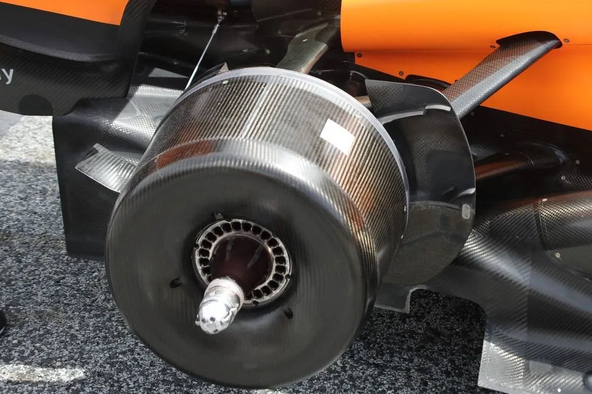
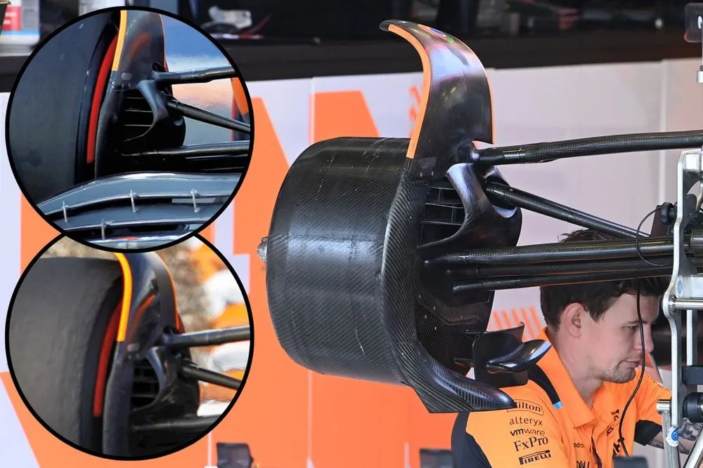
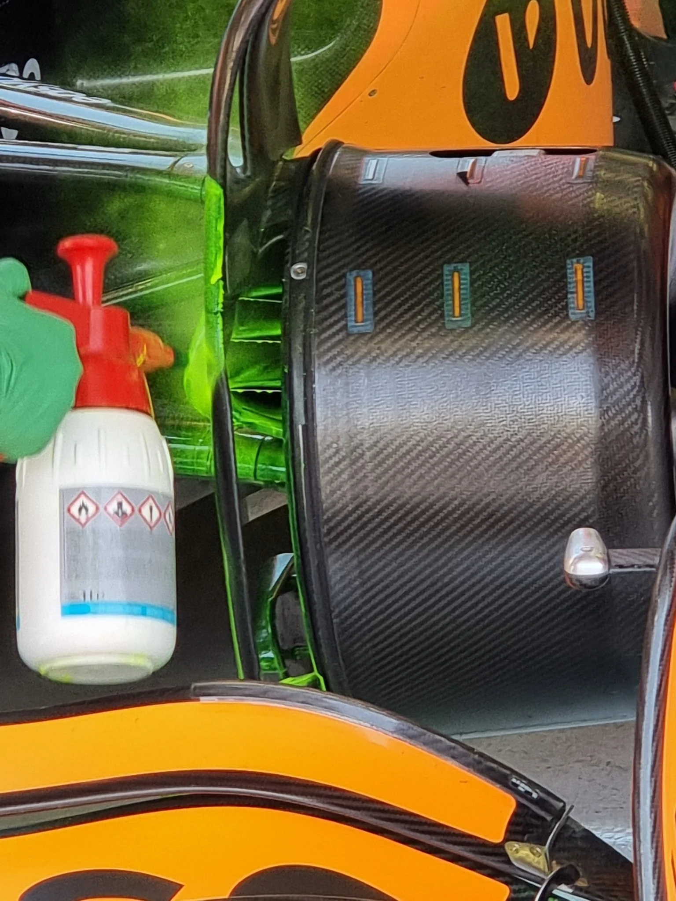
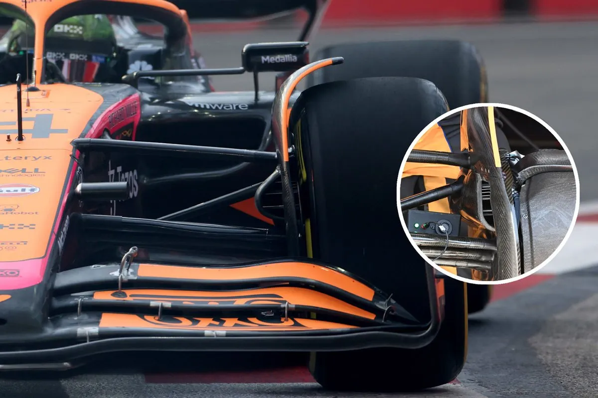
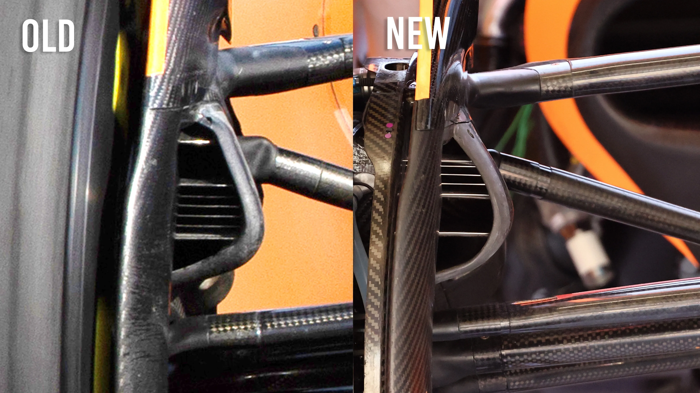

Στη Formula 1, όπου κάθε δέκατο του δευτερολέπτου μετράει, η αξιόπιστη λειτουργία των φρένων είναι απολύτως κρίσιμη. Και η McLaren – μια ομάδα που φημίζεται για τη δημιουργικότητά της – το έμαθε καλά μέσα στο 2025. Η σεζόν μέχρι τώρα την ανάγκασε να ασχοληθεί σοβαρά με το πρόβλημα της υπερθέρμανσης των φρένων, οδηγώντας την στην ανάπτυξη νέων λύσεων που δεν ήταν μόνο τεχνικά εντυπωσιακές, αλλά και απαραίτητες για την επιβίωση στον αγωνιστικό στίβο. 🔥
🚨 Το Πρόβλημα
Από τις δοκιμές πριν την έναρξη της σεζόν, οι μηχανικοί της McLaren κατάλαβαν ότι κάτι δεν πάει καλά. Τα φρένα ανέβαζαν θερμοκρασία επικίνδυνα γρήγορα, ειδικά στο Μπαχρέιν όπου οι θερμοκρασίες ήταν έτσι κι αλλιώς στο κόκκινο. Η αρχική σχεδίαση των συστημάτων φρένων δεν άντεχε στις θερμικές απαιτήσεις και αυτό περιορίζει τον αγωνιστικό ρυθμό, επηρεάζοντας τόσο την αξιοπιστία όσο και την αυτοπεποίθηση των οδηγών. 🛑

🧪 Οι Πρώτες Αντιδράσεις
Η πρώτη λύση που δοκίμασε η ομάδα ήταν προσωρινή: επανασχεδίασαν τους αεραγωγούς των φρένων, με στενά διαχωριστικά και ελαφρώς μεγαλύτερο τύμπανο για καλύτερη κυκλοφορία του αέρα γύρω από τα φρένα. Παράλληλα, δοκίμασαν καλύμματα από τιτάνιο και Inconel για καλύτερη διαχείριση της θερμότητας. Αν και αυτά βοήθησαν λίγο, δεν ήταν τίποτα περισσότερο από πρώτες βοήθειες μέχρι να βρουν την κανονική θεραπεία. 🩹
💡 Η Προηγμένη Προσέγγιση
Με την εξέλιξη της σεζόν, η McLaren δεν έμεινε με σταυρωμένα χέρια. Η ομάδα προχώρησε σε κάτι πιο προχωρημένο: στο περσινο Grand Prix Ισπανίας παρουσίασε ένα καρμπονένιο κάλυμμα φρένων, ειδικά σχεδιασμένο ώστε να κατευθύνει τον αέρα πιο αποτελεσματικά γύρω από τους δίσκους και να περιορίσει τη θερμότητα που μεταφέρεται στις ζάντες και τα γύρω εξαρτήματα. 🌀

Αυτή η λύση έφερε ποιοτική διαφορά σε σχέση με τις προηγούμενες προσπάθειες – όχι απλώς βελτίωσε την ψύξη, αλλά έδωσε και μεγαλύτερη σταθερότητα στο φρενάρισμα σε όλο το stint.
🧐 Ρυθμιστικά Γκρίζες Ζώνες
Όπως συχνά συμβαίνει όταν μια ομάδα καινοτομεί, οι αντίπαλοι άρχισαν να διαμαρτύρονται. Η Red Bull ήταν από τους πρώτους που παρατήρησαν το νέο design στα τύμπανα φρένων της McLaren, το οποίο είχε επιπλέον ανοίγματα για καλύτερη ψύξη. Το πρόβλημα; Οι κανονισμοί της FIA επιτρέπουν τέτοια features μόνο στις ελεύθερες δοκιμές, και όχι σε κατατακτήριες ή αγώνα.

Η McLaren αναγκάστηκε να ισορροπήσει μεταξύ νομιμότητας και απόδοσης, προσαρμόζοντας τις λύσεις της ώστε να περνάνε από τα τεχνικά checks χωρίς πρόβλημα. ⚖️
⚙️ Το Αποτέλεσμα στην Απόδοση
Όλες αυτές οι παρεμβάσεις έπιασαν τόπο. Η αξιοπιστία των φρένων βελτιώθηκε αισθητά, επιτρέποντας στους οδηγούς – τον Lando Norris και τον Oscar Piastri – να πιέσουν περισσότερο, χωρίς να φοβούνται θερμικές αποτυχίες. Τα φρένα δούλευαν πιο σταθερά και πιο προβλέψιμα, κάτι που μεταφράστηκε σε καλύτερες κατατακτήριες και δυνατότερο ρυθμό στον αγώνα. 📈
🔭 Τι Περιμένουμε στη Συνέχεια
Το case της McLaren με τα φρένα είναι χαρακτηριστικό παράδειγμα του πως η τεχνολογία εξελίσσεται μέσα στη σεζόν, live. Η ομάδα συνεχίζει να βελτιώνει τις λύσεις της, με feedback από τους οδηγούς και τεχνική ανάλυση. Οι εμπειρίες αυτές θα τροφοδοτήσουν τις εξελίξεις όχι μόνο μέσα στο 2025, αλλά και για τα επόμενα μονοθέσια.

Και το πιο σημαντικό; Δείχνει ότι η McLaren δεν περιμένει να λυθούν τα προβλήματα από μόνα τους – τα κυνηγάει, τα αναλύει και τα αντιμετωπίζει head-on. 🚀
🧠 Συμπερασματικά
Το πώς η McLaren χειρίστηκε τα ζητήματα υπερθέρμανσης των φρένων είναι ένα μάθημα προσαρμοστικότητας και καινοτομίας. Δεν έσωσε μόνο την απόδοση του μονοθεσίου — αλλά έθεσε και το στάνταρ για το πώς πρέπει να λειτουργεί μια ομάδα Formula 1 όταν πιέζεται από όλους τους πλευρές.

Αν θες να πεις ότι "όλα κρίνονται στις λεπτομέρειες", το παράδειγμα των φρένων της McLaren το αποδεικνύει με τον πιο... αγωνιστικό τρόπο. 🏁


Comments